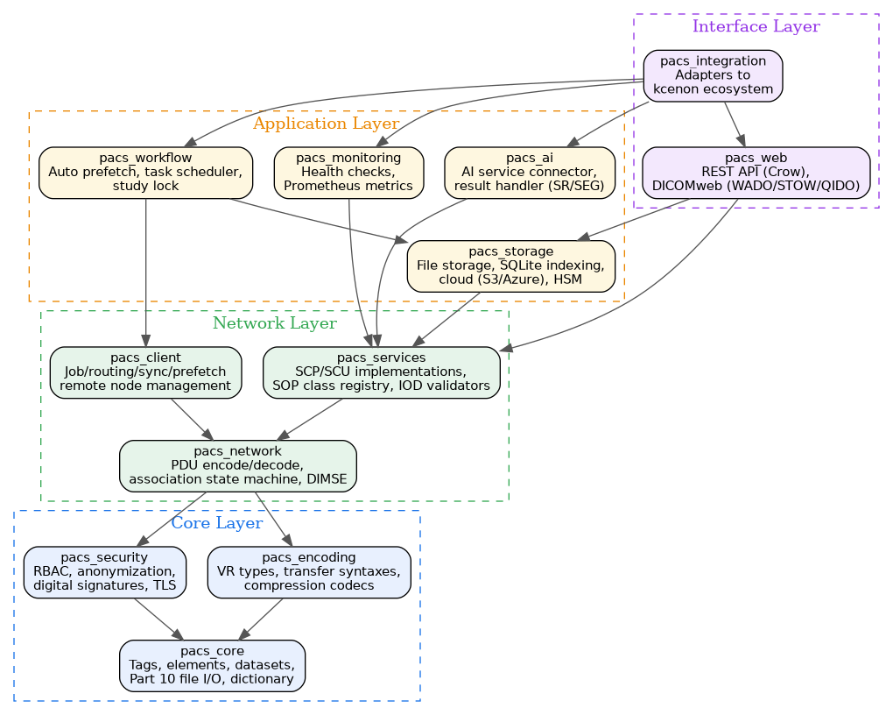

- Generated by
 1.12.0
1.12.0
|
PACS System 0.1.0
PACS DICOM system library
|
PACS System is a modern C++20 PACS (Picture Archiving and Communication System) library for medical imaging. It implements the DICOM standard from scratch with zero external DICOM library dependency, providing complete SOP class support, transfer syntax handling, and DICOMweb services.
Built on the kcenon ecosystem infrastructure (networking, threading, logging, containers), PACS System delivers a layered architecture of 12 library targets covering the full DICOM pipeline from tag-level data handling through network services to cloud storage and AI integration.
| Category | Feature | Description |
|---|---|---|
| Core | DICOM Part 10 I/O | Native file read/write with full VR support |
| Core | 12 Library Targets | Layered architecture from core to integration |
| Encoding | Transfer Syntaxes | Implicit/Explicit VR, JPEG, JPEG 2000, HTJ2K, JPEG-LS, RLE, HEVC |
| Network | DIMSE Services | C-ECHO, C-STORE, C-FIND, C-MOVE, C-GET, N-CREATE, N-SET |
| Network | Association Management | Full DICOM Upper Layer state machine |
| Web | DICOMweb | WADO-RS, STOW-RS, QIDO-RS via Crow REST framework |
| Storage | Multi-Backend | SQLite indexing, file storage, AWS S3, Azure Blob |
| AI | AI Integration | AI service connector with SR/SEG result handling |
| Monitoring | Prometheus Metrics | Health checks and Prometheus-compatible metrics export |
| Security | RBAC | Role-based access control and PS3.15 anonymization |
| Security | TLS | OpenSSL-based secure DICOM associations (BCP 195) |
| Workflow | Task Management | Auto prefetch, task scheduler, study lock |
The 12 libraries are organized in layers. Higher layers depend on lower layers, but never the reverse.

A minimal example reading a DICOM file and extracting patient information:
| Module | Directory | Description |
|---|---|---|
| pacs_core | core/ | Tags, elements, datasets, Part 10 file I/O, DICOM dictionary |
| pacs_encoding | encoding/ | VR types, transfer syntaxes, compression codecs (JPEG, JPEG 2000, HTJ2K, JPEG-LS, RLE) |
| pacs_security | security/ | RBAC, PS3.15 anonymization, digital signatures, TLS profiles |
| pacs_network | network/ | PDU encode/decode, association state machine, DIMSE pipeline |
| pacs_client | client/ | Job management, routing, synchronization, prefetch, remote node management |
| pacs_services | services/ | SCP/SCU implementations, SOP class registry, IOD validators |
| pacs_storage | storage/ | File storage, SQLite indexing, cloud backends (AWS S3, Azure Blob), HSM |
| pacs_ai | ai/ | AI service connector, SR/SEG result handler |
| pacs_monitoring | monitoring/ | Health checks, Prometheus-compatible metrics export |
| pacs_workflow | workflow/ | Auto prefetch, task scheduler, study lock |
| pacs_web | web/ | REST API via Crow, DICOMweb (WADO-RS, STOW-RS, QIDO-RS) |
| pacs_integration | integration/ | Adapters bridging PACS to the kcenon ecosystem |
| Example | Source | Description |
|---|---|---|
| dcm_extract | dcm_extract | Extract pixel data from DICOM files to JPEG, PNG, or raw binary |
| dcm_conv | dcm_conv | Convert DICOM files between transfer syntaxes |
| img_to_dcm | img_to_dcm | Encapsulate standard images (JPEG, PNG) into DICOM Part 10 files |
| query_scu | query_scu | Query a PACS server using C-FIND at Patient/Study/Series level |
| dcm_dump | dcm_dump | Dump DICOM file metadata as human-readable text |
| dcm_info | dcm_info | Display summary information for a DICOM file |
| echo_scu | echo_scu | Verify DICOM association with C-ECHO |
| store_scu | Step 2: Send a file from a C-STORE SCU (Storage User) | Send DICOM files to a PACS server via C-STORE |
| find_scu | find_scu | Query remote PACS with C-FIND |
| pacs_server | pacs_server | Full PACS server with SCP services |
New to pacs_system? Start here:
PACS System is the highest-level application (Tier 5) in the kcenon ecosystem. It depends on the following systems:
| System | Tier | Role | Repository |
|---|---|---|---|
| common_system | 0 | Result<T>, IExecutor, patterns | https://github.com/kcenon/common_system |
| container_system | 1 | DICOM serialization support | https://github.com/kcenon/container_system |
| thread_system | 1 | Thread pools, async execution | https://github.com/kcenon/thread_system |
| logger_system | 2 | Structured logging | https://github.com/kcenon/logger_system |
| monitoring_system | 2 | Metrics collection | https://github.com/kcenon/monitoring_system |
| database_system | 3 | Database abstractions | https://github.com/kcenon/database_system |
| network_system | 4 | TCP/TLS, async networking | https://github.com/kcenon/network_system |